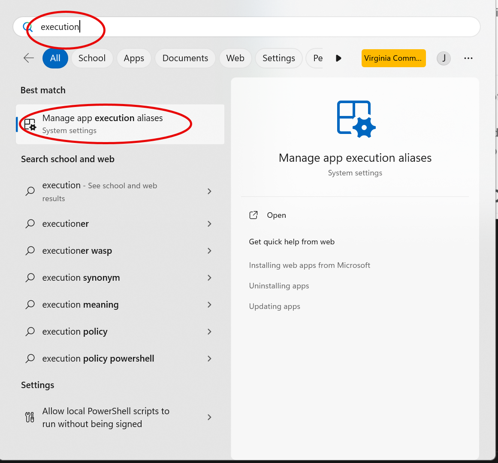
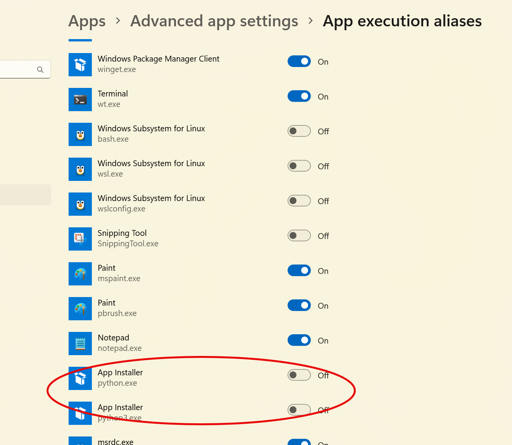

Welcome
Getting your machine ready for software development can sometime be challenging, especially if over time you’ve accumulated lots of software for individual classes.
This site offers a process for preparing your computer for python development using VS code and Quarto. Those on Mac (zsh shell) and Linux (bash shell) have an easier time. Those on Windows have a tougher time because of the multitude of shells (e.g., CMD, powershell-5 or powershell-core).
VSC - visual studio code.
terminal - A command line windows NOT inside VSC. On windows we’ll use a terminal window with powershell. On mac you’ll use terminal window with ZSH. On linux you’ll use a terminal windows with bash.
GUI - graphic user interface, often directly associated with the underlying operating system.
High level tasks
- Make any OS-specific customizations
- Clean up older versions of python
- Install and test quarto
- Install and test pyenv and python
- Install jupyter, matplotlib and plotly for python and quarto
OS-specific customizations
Select from one of the tabs above to see if your OS requires any unique fixes.
In NASCAR you’re called the lucky dog
I’m not aware of any Mac specific fixes that are required.
I’m not aware of any Linux-specific pre-work required to get all this stuff running.
Sorry - you’ve got some work to do!
Windows offers a number of settings that makes it easier to download software from the Micrsoft Store. These features actually get in the way of user installed tools.
- Disable python-related execution aliases
Open the execution alias screen
Press the windows key on the bottom left of your keyboard to bring up the menu shown below.
In the search bar enter execution and then select the option as show in the figure below.

Scan the list
Your list may vary depending on you have installed. Scan the list and disable stuff that looks related to python.

- Your done!
Checklist
- Verify that you can open a terminal NOT IN VSC!
- Verify pyenv, python, poetry, quarto and code from a terminal
- Disable managed app execution aliases
- Remove old versions of python using Add/Remove programs
- PYENV: Install pyenv
- Install python 3.11.6 using pyenv
- Install poetry (DO NOT USE PIP)
- VSC: install python extension
- VSC: install quarto extension
- VSC: install mysql extensions
Trouble-shooting
Many of the problems that I’ve seen result from not completing the install. For most software engineering tools, simply installing the software is only the first part.
Many software tools require second or third steps that make the use of the installed software easier from the command line.
Details
Cleaning
This process requires removal of previously installed versions of python, conda or others. It also requires disabling of Windows convienences that get in the way of python.
- Disable managed app execution aliases
- Remove old versions of python